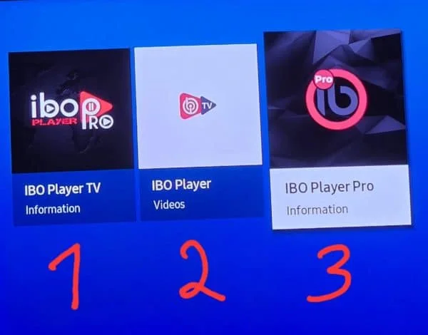
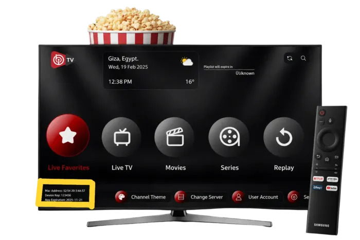
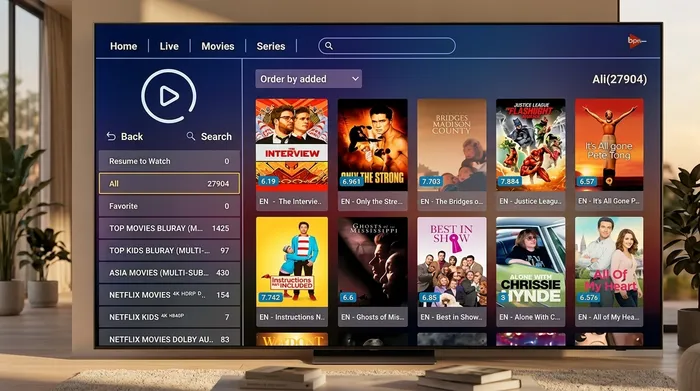

IBO Player
This is the standard IBO Player version available on supported devices. It is a simple app designed to open and play compatible media content on your device.
Setting up IBO Player is quick and easy. Follow these simple steps to install the app, find your device information, activate your player, add your playlist, and start watching.

IBO Player is a media player app available on many supported devices, including Smart TVs, TV boxes, and other compatible streaming devices. The version you use depends on your device, and the most common versions are IBO Player, IBO Player Pro, and IBO Player TV. The setup process is straightforward and does not require complicated technical knowledge.
The right IBO Player version depends on your device and how you plan to use it. Choose the version that matches your platform and viewing setup.

This is the standard IBO Player version available on supported devices. It is a simple app designed to open and play compatible media content on your device.
IBO Player Pro is an enhanced version available on supported platforms and is designed for users who want a more complete viewing experience on compatible devices.
IBO Player TV is designed for Smart TVs and TV devices, with a TV-friendly interface that is easier to navigate with a remote control.
The four steps below make the process easy to follow. Each stage is simple, and most people can complete it in just a few minutes.
Start by installing the appropriate IBO Player version for your supported device. The available app may vary depending on the device and operating system you are using.
After opening IBO Player, the app usually displays device information such as the MAC address and device key or device ID. These details help identify your device during the activation process.

Once your device information is ready, enter the required details to complete activation. After the app is activated, add the IPTV playlist or service information provided by your IPTV subscription. Save the playlist when it appears correctly in the app.
After successful activation and playlist setup, the available channels and content can be displayed inside IBO Player. Open the app, browse your list, and start watching your content.

Choose the version that matches your device.
Use the device information screen in the app.
Save the playlist details provided by your IPTV service.
Browse your content and begin watching.
These answers cover the main questions people ask when setting up IBO Player and preparing it for use with a playlist or IPTV service.
IBO Player is a media player application used to load and play compatible playlists or service information on supported devices. It is not itself an IPTV provider or a source of channels by itself.
IBO Player is the standard version available on supported devices, IBO Player Pro is an enhanced version on supported platforms, and IBO Player TV is designed for Smart TVs and TV devices with a TV-friendly interface for remote control navigation.
Your MAC address and device key are normally displayed inside the app on the device information or settings screen after the application opens.
The device key or device ID is the unique app information shown for your device so it can be identified during activation when required.
After activation, open the app and choose the option to add or load your playlist. Then enter the provider information or playlist details supplied by your IPTV service and save it.
No. IBO Player is a media player application, not an IPTV provider. The channels and content depend on the playlist, service, or provider you add to the app.
Follow the steps above and keep the process simple. If you have questions, contact the USAView team.